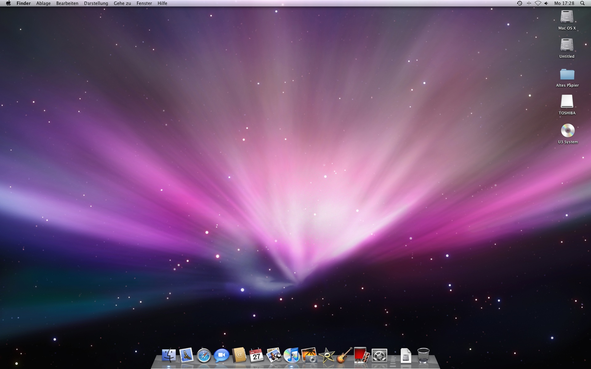

Mac OS
Mac OS wird von Apple seit 1982 entwickelt und seit 1984 vertieben. Es ist das Betriebssystem für den Apple Macintosh.
Versionsgeschichte
- 1984 (Januar) Macintosh System Software (System 0.85)
- Erste Ausgabe von Mac OS
- MacWrite und MacPaint
- 1984 Macintosh System Software (System 0.97)
- Erweiterung der Schreibtischprogramme (Desk Accessories)
- 1985 Macintosh System Software 0.1, 0.3 und 0.5 (System 2.0)
- Anzeige von Ordnern in Listenform
- erste Ausgabe von Microsoft Excel (Excel erschien für IBM-kompatible PCs erst 1987)
- 1986 Macintosh System Software 0.7–1.1 (System 3.0–3.2)
- Hierarchisches Dateisystem HFS
- Programm Auswahl für Drucker und später Netzwerk
- 1987 System Software 2.0–5.1 (System 3.3–4.3)
- AppleShare-Dateiserver
- Multitasking-Funktionen (MultiFinder)
- Farbunterstützung (24-Bit-Farbe)
- HyperCard (Entwicklungsumgebung)
- 1988 System 6
- Verbesserung von Druck- und Tonfunktionen
- 1991 System 7
- Virtueller Speicher
- Programmumschalter-Menü
- QuickTime (Multimedia)-Unterstützung
- TrueType (Zeichensatz-Format)
- Drag and Drop
- Netzwerk- und Filesharing-Verbesserungen
- Aliasdateien
- 1992 System 7.1
- Zeichensatz-Koffer (spezielle Ordner zur Verwaltung von Zeichensätzen)
- Multithreading
- Unterstützung des PowerPC
- 1994 System 7.5
- PowerPC-Unterstützung
- Umstellung der Entwicklung von Pascal auf C
- OpenTransport (TCP/IP)
- Java-Unterstützung (ab 1996)
- Die aktuellen Betriebssysteme werden seit Version 7.5.3 von Apple nicht mehr kostenlos abgegeben
- 1997 Mac OS 7.6
- Aufgrund der Einführung der Mac Clones heißt das System auch beim Start "Mac OS"
- 1997 Mac OS 8
- Neue grafische Gestaltung der Benutzeroberfläche (Platinum)
- Kontextmenüs
- 1998 Mac OS 8.1–8.5
- HFS+-Dateisystem
- Suchprogramm Sherlock
- Mac OS 8.1 letzte Version für 68k Macs
- 1999 Mac OS 8.6–9.0
- Unterstützung für mehrere Benutzer
- CarbonLib (Kompatibilitätsvorbereitungen für Mac OS X)
- Nanokernel mit (asymmetrischer) Multiprozessor-Unterstützung
- Schlüsselbund-Technik zur zentralen Verwaltung von Passwörtern
- Automatische System- und Programm-Aktualisierungen über das Internet
- 2001 MacOS 9.2.2
- Die letzte eigenständige Version des Betriebssystems – Mac OS 9.2.2 – hatte am 5. Dezember 2001 den Verkaufsstart. Danach gab es nur noch einige kleinere Änderungen für 9.2.2 in der für Classic-Umgebungen mitgelieferten Variante
Mac OS X
Mac OS X (X=Zehn), seit Version 10.8 nur noch OS X, ist ein Betriebsystem, welches von Apple entwickelt wurde. Mac OS X ist die aktuellste Version der Mac-OS-Reihe für die Macintosh-Computer von Apple. OS steht für Operating System (engl. Betriebssystem). Der Buchstabe X steht für die römische Zahl 10.
Versionen
- Mac OS X Public Beta (Kodiak)
- Erschien am 24. März 2001
- Langsam
- Hatte dafür eine, für das Stadium, sehr hohe Stabilität
- Mac OS X 10.1 (Puma)
- Erschien am 25. September 2001
- Kostenlose Aktualisierung
- Geschwindigkeit, insbesondere das Ansprechverhalten der Benutzeroberfläche, wurde verbessert
- Fehlende Featurs, wie zum Beispiel das Abspielen von DVDs, wurden hinzugefügt
- Letzte Version: Mac OS X 10.1.5 (Erschienen am 5. Juni 2002)
- Mac OS X 10.2 (Jaguar)
- Erschienen am 13. August 2002
- Mit Quarz-Extreme wurde die Benutzeroberfläche auf geeigneten Grafikkarten beschleunigt
- CUPS wurde als Drucksystem eingeführt ⇒ Verwendung alternativer Drucktreiber möglich
- Letzte Version: Mac OS X 10.2.8 (Erschienen am 3. Oktober 2003)
- Danach gab es noch einige Sicherheitsaktualisierungen
- Raubkatzennamen nicht mehr nur Code-/Projektnamen sondern offizielle Produktbezeichnungen
- Mac OS X 10.3 (Panther)
- Erschienen am 24. Oktober 2003
- Brachte Exposé, das Video-Chat-Programm iChat AV und die Benutzerverzeichnisverschlüsselung FileVault
- Programmierschnittstelle Core Audio wurde hinzugefügt
- Finder wurde überarbeitet
- Einige Inkonsequenzen und Inkonsistenzen der Vorgängerversion beseitigt
- Schlichteres Design der Benutzeroberfläche
- Systemgeschwindigkeit weiter gesteigert
- Schneller Benutzerwechsel wurde eingeführt
- Letzte Version: Mac OS X 10.3.9 (Erschienen am 15. April 2005)
- Im Gegensatz zur Version 10.2 (Jaguar) läuft Panther (ohne Drittprogramme wie XPostFacto) nicht mehr auf den beigen G3-Power-Macs, sondern nur mehr auf sogenannten „New-World“-Macs (mit anderer Bus-Architektur, an den fest eingebauten USB-Anschlüssen und am einfarbig gehaltenen Apfel als Firmenlogo auf dem Gehäuse erkennbar)
- Mac OS X 10.4 (Tiger)
- Erschien am 29. April 2005
- Systemweite Metadatensuche namens Spotlight wurde eingeführt
- Mit Dashboard wurde zu Exposé eine neue Komponente hinzugefügt, die kleine Hilfsprogramme, sogenannte Widgets, einblendet
- Eingeschränkte Unterstützung von 64-Bit-Prozessen (auf 64-Bit-Prozessoren)
- Neue Programmierschnittstellen Core Image und Core Video zur Auslagerung grafischer Berechnungen an die GPU der Grafikkarte
- Seit der Version Mac OS X 10.4.4 läuft das System der Macs mit Intel-Prozessoren
- Aktualisierungen werden getrennt als PowerPC- oder Intel-Version angeboten
- Letzte Version Mac OS X 10.4.11 (Erschienen am 14. November 2007)
- Mac OS X 10.5 (Leopard)
- Erschienen am 26. Oktober 2007
- Nutzeroberfläche des Systems und des Finder deutlich überarbeitet
- Konzept der virtuellen Desktops wurde mit Spaces von einigen Linux-Varianten übernommen
- Integriert sind Datensicherungssoftware Time Machine, sowie Boot Camp, das auf Intel-basierten Macs die Installation von Microsoft Windows parallel zu Mac OS X ermöglicht
- ermöglicht den 64-Bit-Betrieb bei Applikationen mit grafischer Benutzeroberfläche
- Erfüllt als erstes BSD-Derivat die kommerzielle Zertifizierung Single Unix Specification ’03 der Open Group und darf daher den Markennamen „UNIX“ tragen
- Mac OS X 10.6 (Snow Leopard)
- Erschien am 28. August 2009
- Hauptsächlich Verbesserungen und nur wenige neue Funktionen
- Fokus liegt in der verbesserten Ausnutzung aktueller Computerhardware – Rechner mit PowerPC-Prozessoren werden ab dieser Version nicht mehr unterstützt, ein Intel-Prozessor ist also Bedingung
- Durch Grand Central Dispatch und Open Computing Language eine signifikante Leistungssteigerung durch Vereinigung von Mehrkern-Hauptprozessoren mit leistungsfähigen Grafikprozessoren (GPGPU) unter zentralen Programmierschnittstelle erreicht werden
- Erweiterte 64-Bit-Unterstützung im Kernel
- Finder wurde komplett neu geschrieben ⇒ 64-Bit-Anwendung
- Die meisten Vorinstallierten Programme laufen jetzt auch im 64-Bit-Modus, können aber auch im 32-Bit-Modus gestartet werden
- QuickTime X unterstützt moderne Multimediacodecs besser; hinzu kommt native Unterstützung von Microsoft Exchange 2007 in den Programmen Mail, Adressbuch und iCal
- Seit dem 6. Januar 2011 ist die Anwendung für den Zugriff auf den Mac App Store für Snow Leopard verfügbar
- Mac OS X 10.7 (Lion)
- Erschienen am 20. Juli 2011
- Launchpad (eine an iOS erinnernde Liste aller installierten Programme)
- verbesserte Handhabung von Programmen im Vollbildmodus
- Mission Control (eine kombinierte Übersicht über Spaces, Exposé, Dashboard und laufende Vollbildprogramme)
- FileVault2, welches nun auch Full-Disk-Verschlüsselung ermöglicht
- Verschiedene Bestandteile früherer Betriebssystemversionen, insbesondere die Mediencenter-Oberfläche Front Row, eine vorinstallierte Java-Laufzeitumgebung und die Emulationssoftware Rosetta, die das Ausführen von Programmen für PowerPC-Prozessoren ermöglichte, werden nicht mehr unterstützt
- OS X 10.8 (Mountain Lion)
- Veröffentlicht am 16. Februar 2012
- 25. Juli 2012 zum Preis von 17,99 Euro veröffentlicht
- verzichtet explizit auf den Zusatz „Mac"
- Funktionen, die vom Tochter-Betriebssystem iOS übernommen wurden
- Push-Benachrichtigungen samt Mitteilungszentrale
- bessere Anbindung an iCloud
- Ausweitung des iMessage-Protokolls auf den Mac
- dedizierte Programme für Erinnerungen und Notizen
- systemweite Integration sozialer Netzwerke wie Twitter, Facebook, Flickr und Vimeo
- OS X 10.9 (Mavericks)
- Angekündigt am 10. Juni 2013
- Nach dem Surfspot Mavericks südlich von San Francisco benannt wurde
- neue Funktionen wie Tabs und Tagging im Finder
- verbessert den Umgang mit mehreren Bildschirmen
- Update auf Mavericks ist kostenlos, auch zukünftige OS-X-Versionen sollen kostenlos angeboten werden
- Aktuellste Version: 10.9.1 (erschienen am 16. Dezember 2013)
- Aktuellste Vorabversion: 10.9.2 (Erschienen am 19. Dezember 2013)
- iOS (früher iPhone OS)
- Am 9. Januar 2007 im Zusammenhang mit dem neu erschienenen iPhone vorgestellt
- Auf die verwendete ARM-Architektur portierte und an das iPhone angepasste Version von Mac OS X
- Mitgeliefert Internet-Browser Safari, Mail und andere Programme
- iOS kommt auf dem iPod touch, dem iPad und seit September 2010 in einer stark modifizierten Version auch auf dem Apple TV zum Einsatz
- Entsprechend der Funktionsweise und Bedienung eines Handys ist die grafische Bedienoberfläche anders gestaltet als die Oberfläche von Mac OS X für Mac-Computer
- iOS unterstützt nur eingeschränkt die Ausführung von Anwendungen von Drittanbietern im Hintergrund
- OS X Apple TV
- Am 21. März 2007 im Zusammenhang mit dem zu der Zeit erschienenen Apple TV vorgestellt
- Für den Pentium-M-Prozessor des Apple TV angepasste Version von Mac OS X Tiger
- QuickTime sowie eine Front-Row-ähnliche grafische Benutzeroberfläche sind enthalten
- Seit September 2010 enthält das Apple TV einen ARM-Prozessor und benutzt eine an das Gerät angepasste Version von iOS
- OS X Apple TV kommt derzeit nicht mehr zum Einsatz